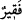

“Bunun üzerine Mûsâ,” onlara acıyarak ve Allah’ın rızâsını taleb ederek “onların
yerine (davarlarını) sulayıverdi.”
Rivâyete göre adamlar, kuyunun başına büyük bir taş koyuyorladı ve bunu da ancak
yedi, on, yahut kırk kişi kaldırabilirdi. Mûsâ (a.s.) yorgun, aç ve ayakları yaralı
olmasına rağmen o taşı yalnız başına kaldırdı.
Belki de onun hayvanları sulaması bir rekâbet doğurdu; onlar da kaldıramasın diye bu
taşı kuyunun başına koydular. Nitekim nazm-ı celîlin sevki de bunun böyle olmasını
gerektiriyor.
“Sonra gölgeye çekildi ve:”
Mûsâ (a.s.) sulama işini bitirince, gölgeye doğru yöneldi. Burası güneş ışınlarının
düşmediği Semüre ağacının gölgesiydi. Güneşin harâreti şiddetli olduğu için onun
gölgesine oturdu ve aynı zamanda acdı.
Ey “Rabbim! Doğrusu bana indireceğin” az ya da çok “her hayra (lütfuna)
muhtacım, dedi.”
Çoğu müfessir buradaki “hayr”ı, Mûsâ (a.s.)’ın durumuna binâen “yemek” şeklinde
yorumlamışlardır. Ayrıca “ (fakir)” kelimesi muhtaç ve isteyen mânâsınadır. Bu
yüzden “” kelimesindeki lâm harf-i cerri ile müteaddî olmuştur.
Bu âyetin diğer bir işârî yorumu da şudur: Sâlik, rûhânî bir âleme ulaştığında, o
âlemin ilim ve mârifetleriyle yetinmesi gerekmez; bilâkis vâsıtasız olarak feyz-i ilâhî
talep eder.
Bazıları demiştir ki: İşte bu Mûsâ Kelîmullah (a.s.), Hak terbiyesinde çocuk çağında
iken haddini aşmadı ve “Rabbim, doğrusu bana indireceğin her hayra (lütfuna)
muhtâcım.” (el-Kasas, 28/24) dedi. Ricâl çağına ulaştığında ise çocukların yemeğine
râzı olmamış ve daha fazlasını isteyerek “Rabbim, bana (görün), sana bakayım.” (el-
A’râf, 7/143) demiştir. Başlangıçta bütün isteği yalnızca yemek ve içmek iken nihâyette
talebi hicâbın kaldırılması ve sevdiklerini müşâhede olmuştur.
İbn Atâ der ki: Mûsâ (a.s.) ubûdiyyet makamından rubûbiyyet makamına bakınca havf
ve haşyet duyup tevâzu gösterdi. Sonra sırrına doğan rubûbiyyet nurlarından dolayı
ihtiyaç lisânıyla konuştu. Ancak onun muhtaçlığı (iftikârı), kulun bütün hallerinde
Mevlâsına olan muhtaçlığı şeklindedir; yoksa bir şey isteme veya taleb etme şeklindeki
muhtaçlık değildir.
Sehl’e gerçek (sâdık) fakir kimdir? diye soruldu. Cevaben şöyle dedi: “İnsanlardan
bir şey istemeyen, verilirse geri çevirmeyen ve verileni biriktirmeyen (hapsetmeyen)
kimsedir.”
Fâris şöyle der; Üzerinde açlık ve sıkıntı izleri gördüğüm bir fakire “Niçin
istemiyorsun ki insanlar sana yedirsinler?” dedim. Şu cevabı verdi: “İstediğim takdirde
vermezlerse felâh bulamazlar; ondan korkuyorum.”
Mûsâ (a.s.) acıktığı zaman, yemek ihtiyacını Allah’dan istedi; insanlardan istemedi.